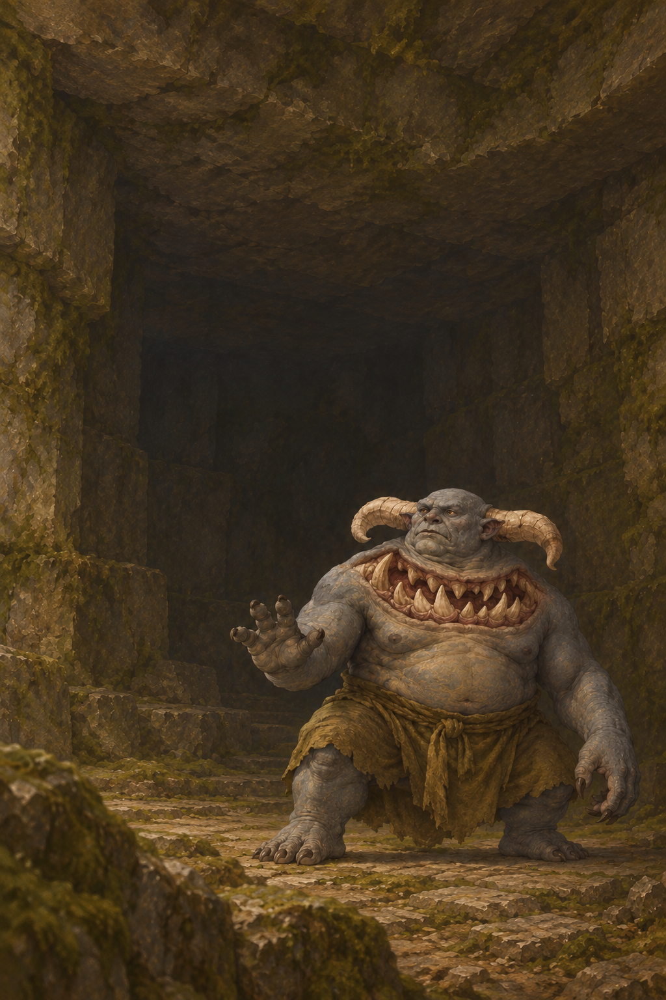
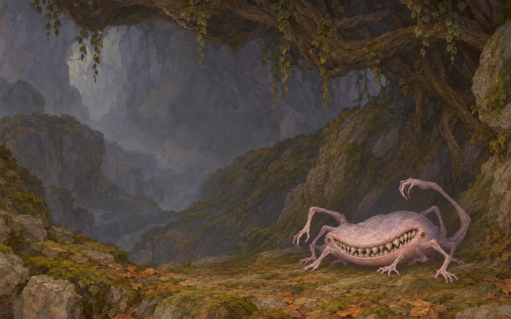
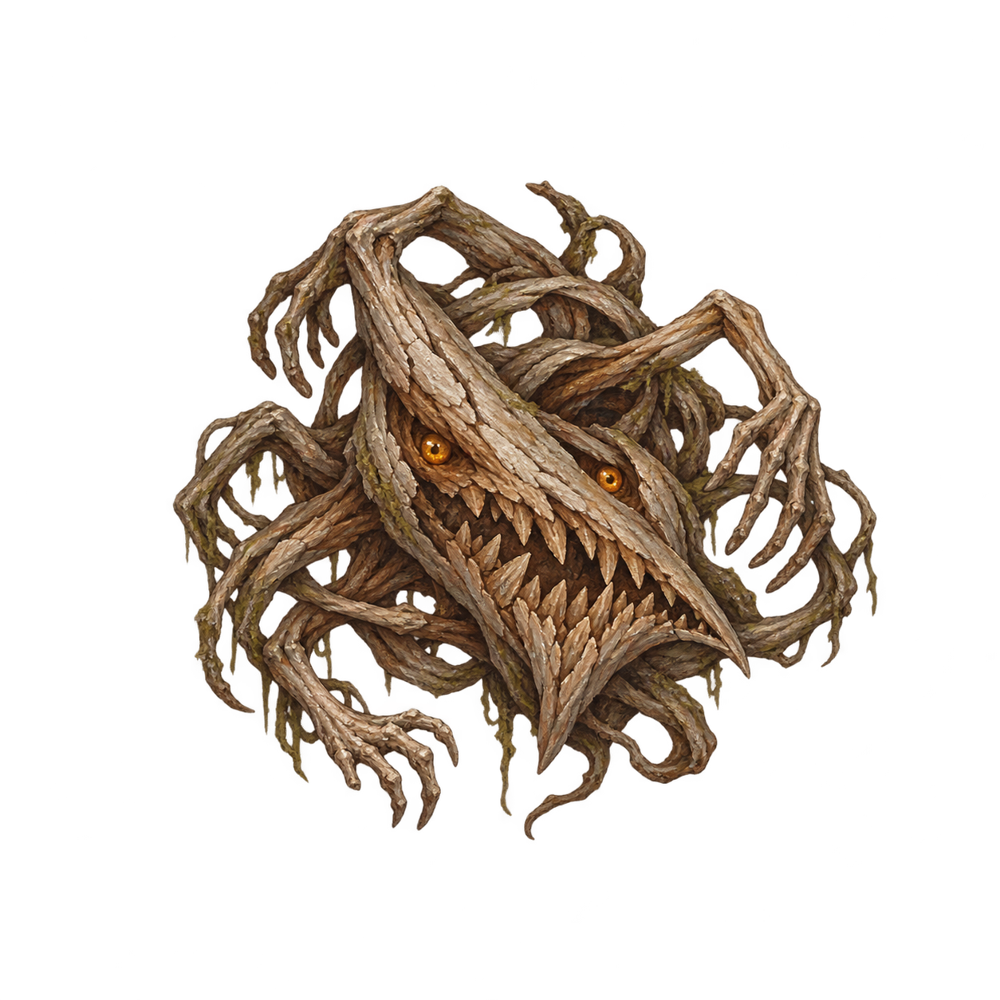
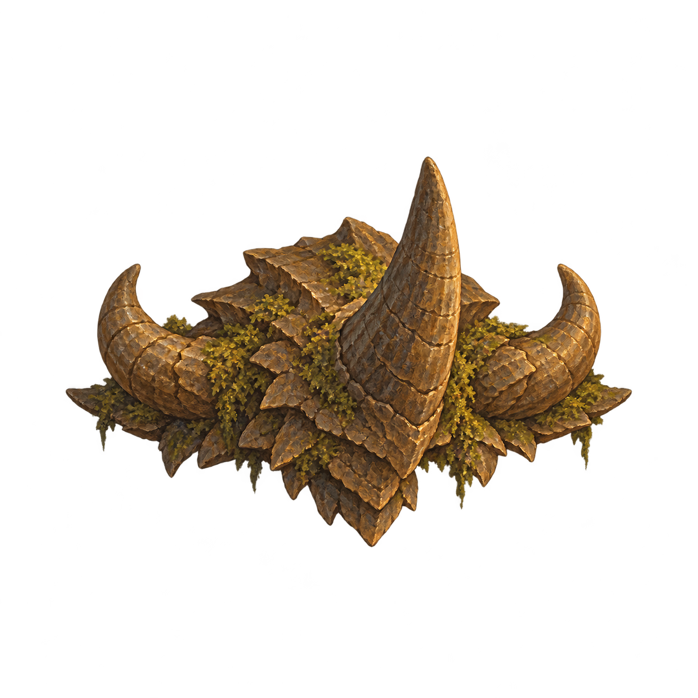

Oculum — telefono e reliquie, lotto 2
Undici desktop già approvati a confronto con 22 nuovi derivati. Telefoni e reliquie sono approvati esplicitamente il 30 ottobre: «Approvo tutti e 22». Nessun nuovo potere o drop è implicito. Le immagini si aprono a piena risoluzione con un clic.
Stile pittorico Rame fatato, anatomie e colori tratti dai disegni canonici. Originali, prompt esatti e SHA conservati. Alpha reale sulle reliquie; i telefoni sono sfondi opachi. Ispezione locale, senza certificazione della resa nell'app.
Mezzo Demone Massiccio
Desktop già canonico
Telefono — approvatoReliquia decorativa — approvato Maledizione Maggiore

Desktop già canonicoTelefono — approvatoReliquia decorativa — approvatoMaledizione di Legno
Desktop già canonicoTelefono — approvato
Reliquia decorativa — approvato Forest Demon
Desktop già canonicoTelefono — approvato
Reliquia decorativa — approvato Forest Demon Blu dalle Corna Rosa
Manifest, prompt e verifiche tecniche · Rapporto QA indipendente